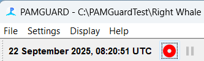

These notes apply to running PAMGuard in real time, acquiring data from a sound card or other acquisition device, entering data manually, etc. When re-processing data from files, dates and times are always taken from the file names and the number of samples processed from the files.
When running PAMGuard in real time, time can be taken from several different sources:
The only one of these that can be guaranteed to be accurate is the GPS since GPS times are continually updates from globally accurate atomic clocks. (GPS works by measuring time differences between signals from different satellites to nanosecond accuracy, so GPS time HAS to be accurate).
If your computer is connected to the Internet, then it's also likely that the PC Clock will have set itself accurately to Internet Time.
Earlier versions of PAMGuard were able to automatically set the PC Clock from the GPS. Sadly, that's quite tricky to do now on Windows computers since PAMGuard would have to be started with admin privileges.
Other clocks 'drift', that is they gain or lose a bit of time every day. This includes the PC internal clock, which will gradually become wrong by several seconds unless it's been connected to the Internet and is able to update itself regularly. It also applies to the 'clocks' that control the sampling of your acoustic data in a sound card, or other input device. The exact number of samples you get will not be exactly what you set it to, so times calculated based off counts of samples will gradually become inaccurate.
PAMGuard records all data using UTC Time (Coordinated Universal Time) also known as Zulu Time in some countries.
This is a standard international time zone, that is also used as Internet Time. It does not change with daylight saving and is the same at every point in the world. Knowing that data are in UTC keeps things simple, and you can always convert to your local time, with or without daylight saving, when needed.
Be Careful!, particularly with daylight saving. For instance, I'm in the UK, so my computer is set to the time zone UTC+00.0 (Dublin, Edinburgh, Lisbon, London). This is NOT the same as UTC (Coordinated Universal Time) since on top of that UTC+00.0, it's summer, so my PC has added an additional hour for daylight saving, i.e. the current time is 08:08 UTC, but 09:08 local.
PAMGuard assigns times to each detection, or other recorded data, by reading the PC Clock when PAMGuard starts, then for each acoustic detection, it simply adds on a number of seconds calculated as the total number of processed samples divided by the sample rate.
For non-acoustic data, for instance User Comments, PAMGuard simply uses the current PC Clock time.
It is likely that the clock in the corner of your PC will be showing local time. That is OK. So long as the time zone in the PC is set correctly, then the true underlying clock within the PC will be set to UTC.
One of the most common errors people make is to set their PC Clock to UTC, knowing that that's what PAMGuard likes, but since there is a time zone set in their PC, this pushes the PC's internal clock to UTC minus whatever the PC time zone was along with any daylight saving.
Sometimes, you have no choice but to set the PC Clock manually. For instance, if you're not connected to the Internet and you can't get the GPS to set the PC Clock because you don't have admin rights.
If you do have to do this, then you have to worry about your time zone. It's most likely that you'll need to set the correct LOCAL Time on the computer, and this will then automatically set the correct UTC time in the internal computer clock. i.e. I can see from my GPS that it's now 08:58 UTC, but I know my PC clock has an hour of daylight saving, so I should set my PC clock in the system control panel to 09:58.
Alternatively, you could set the PC time zone to UTC, then set the time as UTC.
This can all get quite confusing, so it's important to check things are right.
The PC time in UTC is always shown in the top left corner of the display. Check that this is showing the correct time in UTC.

If you've a GPS, then this can be checked against the GPS time, shown either on the Map Display or the NMEA strings list.
Additional checks on time can be set up from the File > Global time settings ... menu.
This will log times derived from the PC Clock and another reliable data source, namely the GPS or an Internet time server to a database table "Global_Time" which can be used both to check your data and to sort out any disasters.
If you select the option to 'correct UTC in all modules', then PAMGuard will attempt to correct times as data are created. Note however that this option is not currently sufficiently tested for reliability.
Just because you've set the sample rate in your Sound
Acquisition module to a particular value, doesn't mean that the
device you're using will sample at that rate.
Cheap sound cards can just have cheap clocks in them, which sample at the wrong rate. Further, Windows USB sound cards can drop packets of data if the USB bus, or the computer, is too busy thereby messing up any calculations of time based on counts of samples.
In your database, you can check the Sound_Acquisition table, which will show any offsets between times calculated from the sample count, and the actual time from the PC clock, though if these differ, you'll have to use GPS data to determine which is correct.